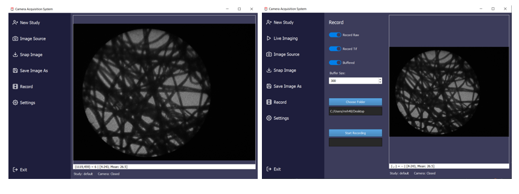

If you work in a hardware lab then you will probably have encountered LabVIEW, the programming language from National Instruments. It is something of an acquired taste in the coding world; while there is a devoted fanbase, others seem to have a negative reaction to the idea of a graphical programming language, perhaps it’s too reminiscent of something like Scratch?
For the uninitiated, a LabVIEW program consists of a collection of icons, called virtual instruments, connected by lines, the ‘wires’. The paradigm is ‘data flow’; rather than forcing a strict sequence of commands and operations, we tell LabVIEW how we need data to flow between different steps of the program. This makes it very easy to create multi-threaded applications where things happen in parallel, without us having to think too much about what is actually happening at a lower level.
LabVIEW is often used in imaging labs, and has been a staple of the Applied Optics Group for decades. There are various reasons for this, but I think it mostly comes down to the speed with which you can spin up a new application that involves one or more pieces of hardware. As long as your devices are supported natively by LabVIEW, or an API is available, then it’s very quick to put together something that can do live data grabbing, processing, and display. Students joining the lab can pick up the basics of how to do this very quickly, and get to the interesting science and engineering sooner.
Often, though, as a project progresses, we want to do a bit more than collect and display data. As we gradually start to add more functionality, the LabVIEW program becomes increasingly complex. And this is where the low barrier to entry comes back to bite us. It is certainly possible to create high-quality, maintainable LabVIEW projects, but it requires training and practice. We have to learn to use the right design patterns rather than hacking things together quickly. For a PhD student with lots else to learn, it’s unlikely to be a priority. Good programs also take longer to implement, at least to start with, which is at odds with our usual desire to just ‘get something working’. Almost inevitably then, most programs quickly become half-broken messes that are difficult for anyone other than the original creator to maintain or adapt. Version control is hard (I've never seen anyone use it in an academic lab) and there is often very little code re-use between programs.
Around the start of COVID, in my enforced absence from the lab, I started plotting how I might escape LabVIEW. At that point we were also using Matlab quite a lot for all offline processing and modelling, but it’s really not suitable for building live imaging applications. I had begun experimenting with Python, which I hadn’t touched since my MPhys project in Durham many years earlier, when I had tried to write an open loop controller for a deformable mirror. At Kent, our physics students now do most of their undergraduate programming in Python, and of course it has become one of the most popular languages generally, particularly for anything to do with AI. So it seemed worth exploring if this could be the language of choice for the live software. If it worked, then we could use Python both for our offline prototyping and analysis and for our real-time imaging applications, allowing code to be re-used without porting between languages.
Building a GUI in Python is straightforward, at least in principle. There are various frameworks available, such as Tkinter and PyQt, and there are packages available for almost anything you could imagine doing. Writing a quick script to do some processing of images is straightforward. But when you start trying to build something for live use in the lab, you really start to realise why LabVIEW is so popular. It’s much more work to figure out how to interface with hardware. And then you want something multi-threaded, so that you can collect, process and display images at the same time? All doable, but requiring some thought and a lot of coding. Want your threads to run on different processes, to take advantage of all those CPU cores you have? Now you will really have some fun, launching a Python interpreter per process and managing data transfer using pipes or shared memory. There was zero-chance that a typical incoming PhD student was going to get something up and running in a decent amount of time.
But, every student doesn’t actually need to code a whole GUI or think about how data is being transferred between processes. Most of what we do from project to project is quite similar – grab images from a camera or other sensors, process the images and then display them, perhaps with some control of other hardware like galvo scanners or light sources. We want also want to be able to save data, and control some hardware parameters from within the GUI. So, what we needed was a generic GUI that handled all of the basics, but could then be tailored to each individual project or imaging system.
This came together slowly, with a few false turns, but we now have something that has matured into a very useful base for building imaging GUIs – CAS, an open source framework for building Python Imaging GUIs. It consists of a hardware abstraction layer for cameras, the GUI itself, and a back end system that handles threading and data transfer. The base CAS GUI has all the common core functionality we need across projects, and then by sub-classing it we can generate customised GUIs for individual imaging systems. A simple GUI then only takes a few lines of code to create. For example, only the following is needed to create a GUI that grabs images from a camera, flips it, and then displays it live:
import sys
import numpy as np
from PyQt5.QtWidgets import QApplication
from cas_gui.base import CAS_GUI
from cas_gui.threads.image_processor_class import ImageProcessorClass
class MyProcessorClass(ImageProcessorClass):
def process(self, inputImage):
return np.fliplr(inputImage)
class example_GUI(CAS_GUI):
windowTitle = "My example GUI"
processor = MyProcessorClass
if __name__ == '__main__':
# Create and display GUI
app = QApplication(sys.argv)
window = example_GUI()
window.show()
# When the window is closed, close everything
sys.exit(app.exec_())The default GUI looks like this:

But CAS is infinitely customisable, since anything can be overridden in the sub-class, it just depends on how much work you want to do.
I still use LabVIEW for a few projects, mostly collaborations or when working with specific National Instruments hardware. But CAS has now become the workhorse of the lab. It does require a bit of discipline to use effectively. The golden rule is we never fork CAS! Since every GUI subclasses CAS, any alterations or additional functionality can be added in the child GUI. If any of these functions look like it would be useful more generally then we might eventually add it into CAS, but only if it doesn’t break all the other GUIs based on it. This way, whenever we do add a new feature it can be safely rolled out to all the GUIs in the lab.
Creating CAS was a huge amount of upfront work (it’s around 7k lines of code). I hope that it will eventually find uses outside of our lab. To encourage its adoption I wrote an application note for Applied Optics (https://doi.org/10.1364/AO.564458) where I go into quite a bit more detail on the general principles of using Python for imaging GUIs, and then how to use CAS to skip most of those steps. The documentation is also coming together, and there are a few example applications included on GitHub. I know that some people outside the lab have tried it out, although I don’t yet know if anyone else is using it routinely, if you are and happen to read this, please let me know!